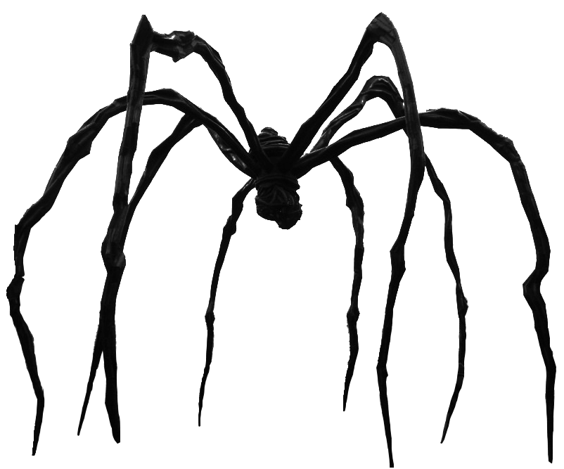

Maman, 1999
bronze, stainless steel, and marble
Perhaps her best known work, Maman (and its many variations) are representative of Bourgeois and her mother. Not as sinister as it may seem, the spider is representative of protectiveness and cleverness. It also represents Bourgeois' mother's lifetime work as a weaver and tapestry restorer.